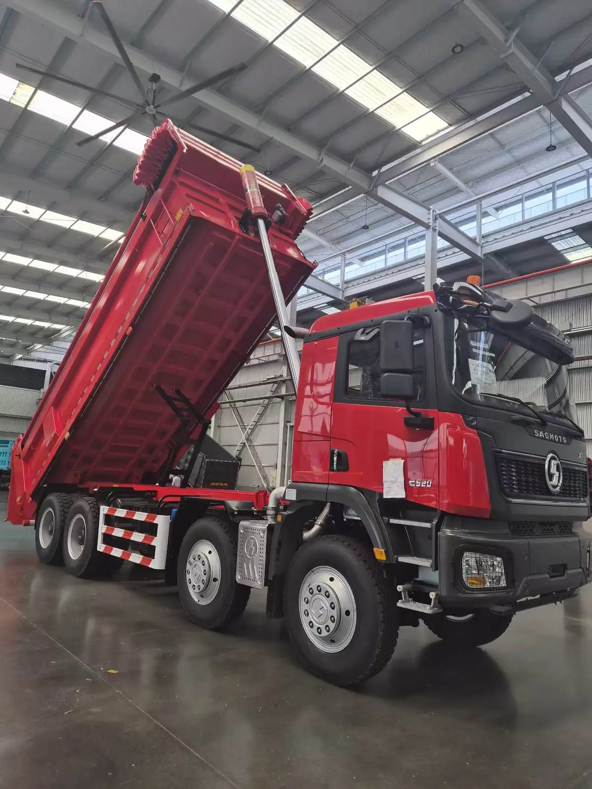
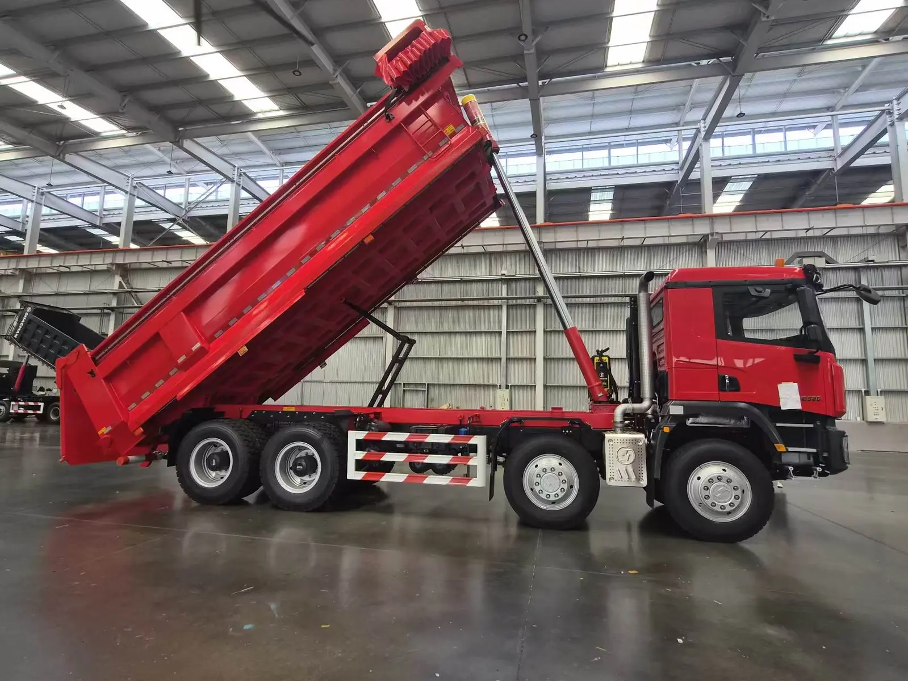
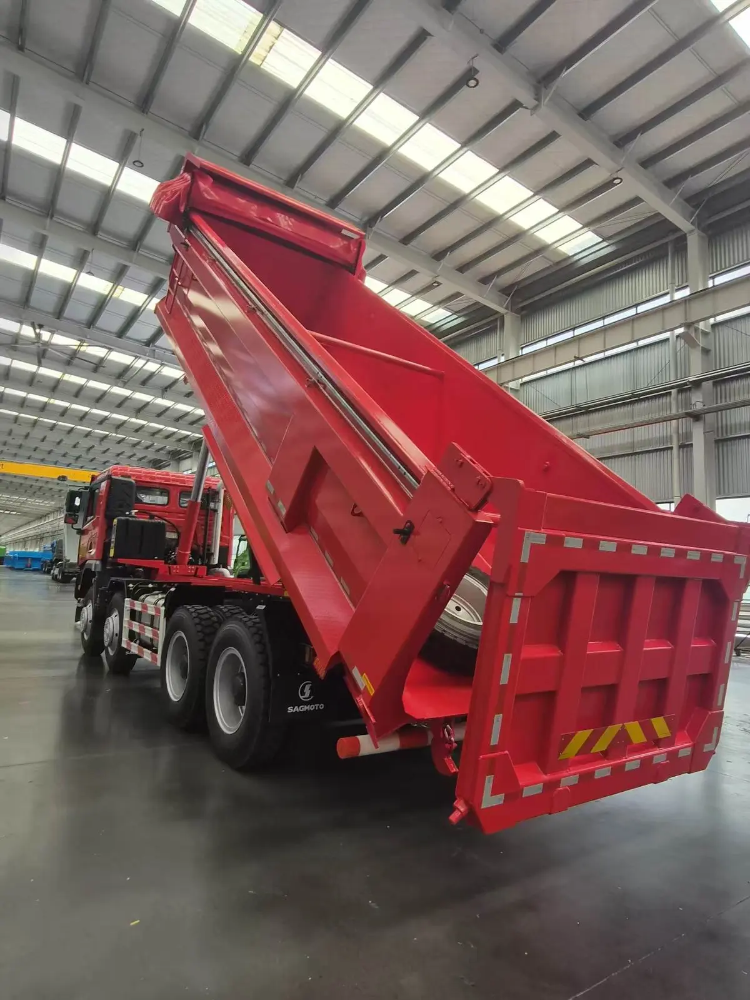
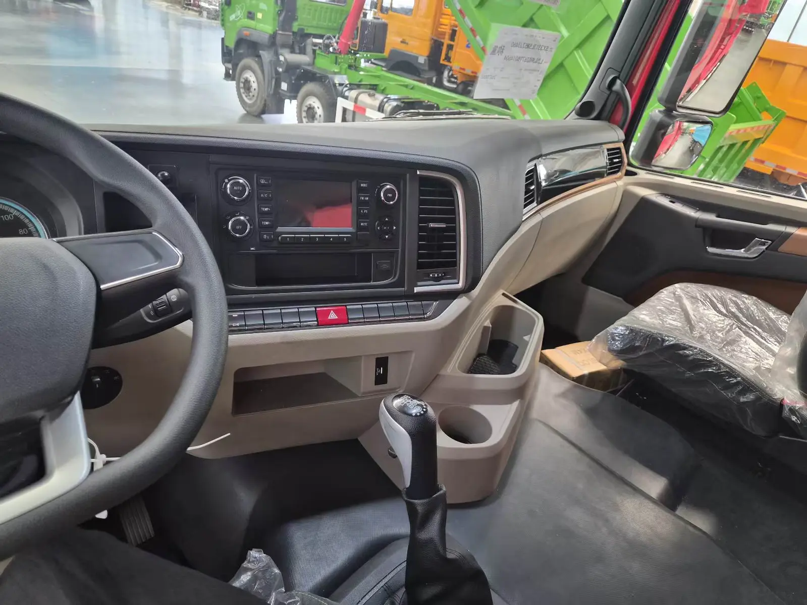
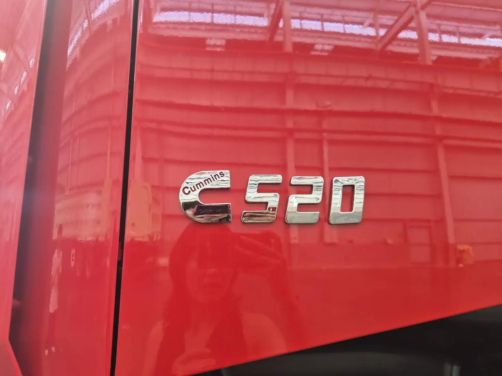

Para seleccionar un camión volquete 8x4 en Costa Rica no basta con comparar potencia y volumen. La carga, las pendientes, el tipo de vía, el espacio de maniobra y los requisitos legales pueden cambiar la configuración adecuada.
Respuesta directa: el SAGMOTO X1S 8x4 de esta ficha ofrece 520 HP, transmisión FAST de 12 velocidades y caja en U de 7,4 metros. Puede evaluarse para construcción y transporte pesado, pero antes de importarlo a Costa Rica deben confirmarse homologación, norma de emisiones, peso por eje, dimensiones y matriculación con la unidad exacta.
Configuración documentada del SAGMOTO X1S 8x4
| Modelo | SX3313L5M52J3460 |
|---|---|
| Tracción y dirección | 8x4 · volante a la izquierda |
| Motor | Cummins M13E3 520 · 520 HP · 12,5 L · Euro III |
| Transmisión | FAST 12JSDX240T + QH50 + FHB400 |
| Distancia entre ejes | 1.950 + 3.425 + 1.400 mm |
| Velocidad máxima | 80 km/h |
| Ejes | HDZ 9,5 T delantero · HDZ 16 T MAN trasero, doble reducción, relación 5,262 |
| Neumáticos | 12.00R24 / 20PR |
| Tanque de combustible | 400 L de aluminio |
| Caja basculante | Forma U · 7.400 × 2.300 × 1.500 mm · piso 10 mm · laterales 8 mm · lona eléctrica |
Datos tomados de la ficha suministrada para esta configuración. Precio, disponibilidad, plazo y cumplimiento en Costa Rica se confirman por escrito para cada pedido.
¿En qué operación puede encajar un 8x4?
Un chasis de cuatro ejes permite estudiar una distribución de carga distinta a la de un 6x4 y acompaña una caja más larga. Esto puede resultar útil en movimiento de tierra, agregados y obras donde la ruta y el espacio admitan el largo total del vehículo. No determina por sí solo la carga útil legal.
Carga
Indique material y densidad. Arena húmeda, grava y roca pueden ocupar el mismo volumen y generar pesos muy diferentes.
Ruta
Comparta pendientes, superficie, radios de giro, distancia diaria y porcentaje de recorrido en carretera.
Normativa
Confirme emisiones, peso bruto, límites por eje, dimensiones y proceso de registro antes de producir.


Potencia, transmisión y pendientes
El Cummins M13E3 520 de 12,5 litros desarrolla 520 HP y trabaja con la transmisión FAST 12JSDX240T. La relación final 5,262 forma parte de una configuración orientada a trabajo pesado. Para una selección responsable hay que relacionar estos datos con la pendiente máxima, la velocidad esperada, el peso real y el kilometraje diario.
Una cifra de potencia alta no sustituye el estudio del ciclo de trabajo. Si el camión circulará frecuentemente por carretera, entrará en zonas urbanas o descargará en espacios limitados, también deben revisarse maniobrabilidad, altura libre y longitud total.
Caja en U y tipo de material
La caja documentada mide 7.400 × 2.300 × 1.500 mm. El piso de 10 mm y los laterales de 8 mm corresponden a la unidad suministrada, mientras que la lona eléctrica ayuda a cubrir la carga. Antes de confirmar esta caja, el comprador debe indicar el material predominante y su densidad aproximada.
- cantidad de camiones y puerto de destino;
- material, densidad y carga objetivo;
- pendiente máxima y condiciones de carretera;
- distancia y horas de trabajo por día;
- requisitos costarricenses de emisiones, peso, dimensiones y registro.
Cabina para la operación diaria
La configuración incluye asiento neumático, suspensión mecánica de cabina de cuatro puntos, luces diurnas LED, climatización automática, pantalla LCD de 7 pulgadas, radio Bluetooth y alarma de reversa. Las etiquetas de operación indicadas en español facilitan la entrega y el mantenimiento en un mercado hispanohablante.


Conclusión: cuándo solicitar esta configuración
El X1S 8x4 merece evaluación cuando el proyecto necesita una caja larga, cuatro ejes y un tren motriz de 520 HP. Si la prioridad es un vehículo más corto o una maniobrabilidad diferente, conviene comparar el SAGMOTO X1S 6x4. Consulte también la ficha técnica en español del X1S 8x4 y el análisis general para Latinoamérica.
Preguntas frecuentes
¿El SAGMOTO X1S 8x4 es adecuado para Costa Rica?
Puede evaluarse para construcción y movimiento de materiales si la ruta, las pendientes y los requisitos legales son compatibles con la configuración. La comprobación debe realizarse antes del pedido.
¿Qué motor utiliza?
Cummins M13E3 520 Euro III de 12,5 litros y 520 HP.
¿Cuáles son las medidas de la caja?
7.400 × 2.300 × 1.500 mm, con piso de 10 mm, laterales de 8 mm y lona eléctrica.
¿Qué debo enviar para recibir una cotización?
Cantidad, puerto, material, densidad, recorrido, pendientes, tipo de vía y requisitos locales de registro.
Solicite una propuesta para Costa Rica
Envíe los datos de su proyecto. Revisaremos la configuración, la documentación y el transporte antes de confirmar precio y plazo.